전파전자기능사(구) (2004-04-04 기출문제)
1과목: 임의 구분
1. 그림과 같은 고주파 증폭회로에서 중화용으로 사용된 것은?
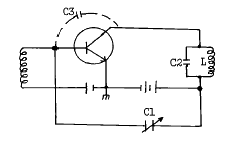
- C1
- C2
- C3
- L
(정답률: 알수없음)

2. 무선 수신기에 고주파 증폭기를 붙이는 목적과 거리가 먼 것은?
- 페이딩을 방지한다.
- 선택성을 좋게한다.
- 이득을 높인다.
- 신호대 잡음비를 높인다.
(정답률: 알수없음)
3. 델린저 현상과 자기장의 영향을 가장 많이 받는 전파는?
- 장파
- 중파
- 단파
- 초단파
(정답률: 알수없음)
4. 송신 안테나로부터 복사된 전파가 서로 다른 경로를 통하여 수신 안테나에 도달하기 때문에 이 경로에 따라 위상차가 발생되어 수신 전계강도가 변화한다. 이러한 페이딩을 무엇이라 하는가?
- 간섭성 페이딩
- 편파성 페이딩
- 도약성 페이딩
- 흡수성 페이딩
(정답률: 알수없음)
5. 무 지향성 Antenna에 해당되지 않는 것은?
- 휩 Antenna
- 슬리브 Antenna
- 브라운 Antenna
- 야기 Antenna
(정답률: 알수없음)
6. 어떤 안테나에서 안테나의 전류계의 지시가 2[A]일 때 안테나에 공급되는 전력은 얼마인가? (단, 안테나의 저항은 25Ω이라고 한다.)
- 1000[W]
- 100[W]
- 10[W]
- 1[W]
(정답률: 알수없음)
7. 레헤르선 파장계로 파장을 측정하려고 한다. 100[㎒] 정도의 전파의 파장을 측정하려고 할 경우 레헤르선의 길이는 최소 몇[m] 이상이라야 하는가?
- 1[m]
- 1.5[m]
- 2[m]
- 2.5[m]
(정답률: 알수없음)
8. 무선 송신기에서 송신 주파수를 정밀하게 측정할때 사용되는 주파수계는?
- 흡수형 주파수계
- 계수형 주파수계
- 딥미터
- 브리지법
(정답률: 알수없음)
9. 어떤 LC회로에서 공진 주파수 1[㎒]일 때 고주파 전류가 1[A]이고, 945[㎑] 및 1⑤5[㎑]에서 0.707[A]의 전류가 흘렀다. 이 때 코일의 Q는?
- 약 8
- 약 9.1
- 약 9.8
- 약 12
(정답률: 알수없음)
10. 마이크로파의 전력을 측정하기 위하여 방향성 결합기를 연결하였다. M2에 나타나는 값으로 옳은 것은?
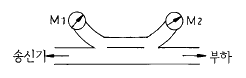
- 반사계수
- 반사파전력
- 진행파전력
- 정재파전력
(정답률: 알수없음)
11. FM 송신기에 사용되는 순시편이 제어(IDC)회로는 무엇을 위하여 사용하는가?
- 고조파 변형을 방지
- 점유주파수 대역폭 확대를 방지
- 주파수의 변화를 방지
- 선택 특성을 조정
(정답률: 알수없음)
12. 진폭변조 송신기의 구성중 발진기의 주파수가 발사 신호주파수보다 낮을때 주파수를 높이기 위해 사용되는 회로는?
- 수정 발진기
- 전력 증폭기
- 안테나
- 주파수 체배기
(정답률: 알수없음)
13. 진폭변조에서 반송파 주파수를 fc, 변조파의 주파수를 fs라 할때 상측파 주파수는?
- fc + fs
- fc - fs
- fc + 2fs
- fc - 2fs
(정답률: 알수없음)
14. 진행파에 대한 반사파란?
- 다이폴 안테나에서 측면으로 복사되는 전력
- 안테나에서 송신기로 되돌아오는 전력
- 수신시 에코현상을 일으키는 전력
- 반송파 주파수보다 낮은 주파수 전력
(정답률: 알수없음)
15. 인마세트 선박지구국(INMARSAT SES)의 인마세트 A형의 무선설비로 무선전화에 의한 통신을 하는 경우 다음중 어느 변조방식이어야 하는가?
- 진폭변조
- 주파수변조
- 위상변조
- 펄스변조
(정답률: 알수없음)
16. 다음 위성 통신 방식 중 회선 접속 방식이 아닌 것은?
- 고정 할당 다원 접속 방식
- 시분할 다원 접속 방식
- 부호 분할 다원 접속 방식
- 주파수 분할 다원 접속 방식
(정답률: 알수없음)
17. 저궤도 위성의 특징이 아닌 것은?
- 정지 궤도 위성에 비하여 규모가 작다.
- 위성의 속도는 지구의 자전속도와 같다.
- 사진 정찰등 군사용으로 유용하다.
- 위성 이동 통신용으로 활용할 수 있다.
(정답률: 알수없음)
18. 희망하는 주파수를 불필요한 다른 전파들로부터 분리시켜 선택할 수 있는 능력을 무엇이라 하는가?
- 감도
- 선택도
- 충실도
- 안정도
(정답률: 알수없음)
19. 송신과 수신을 교대로 하고 동시에 송· 수신을 할 수 없는 통신방식은?
- 복신방식
- 반이중 통신방식
- 중앙집중방식
- 이중 통신방식
(정답률: 알수없음)
20. FM 수신기에 필요 없는 회로는?
- pre-emphasis
- de-emphasis
- 국부 발진회로
- 비검파회로
(정답률: 알수없음)
2과목: 임의 구분
21. ITU 구조에서 "세계전파통신회의" 를 나타내는 것은?
- WRC
- WARC
- RRC
- IFRB
(정답률: 알수없음)
22. 무선전화 "MAYDAY" 와 같은 무선전신 약어는?
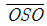
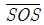
- XXX
- TTT
(정답률: 알수없음)
23. 다음 약어가 나타내는 정의는?
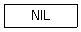
- Notice message.
- I have nothing to send to you.
- Negative indicate longitude.
- Nothern in land.
(정답률: 알수없음)
24. 다음 밑줄친 것과 내용이 같은 것은?
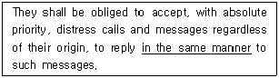
- with absolute priority, regardless of their origin
- absolute reply with priority, regardless the traffic
- regardless their origin they should reply
- reply immediately
(정답률: 알수없음)
25. 다음 문장이 나타내는 용어는?
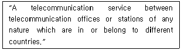
- Mobile Service
- International Service
- Telecommunication Service
- Radio Communication Service
(정답률: 알수없음)
26. 밑줄친 부분의 해석으로 가장 적합한 것은?
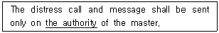
- 기관
- 당국
- 지휘자
- 권한
(정답률: 알수없음)
27. Which one do you use to indicate the end of communication between two stations?
- out
- wait
- roger
- stand by
(정답률: 알수없음)
28. 다음 용어를 가장 적합하게 우리말로 표현한 것은?
- 저궤도이동위성궤도
- 인공위성자전주기
- 대지정지위성궤도
- 대기권위성궤도
(정답률: 알수없음)
29. What do you call the person responsible for a ship?
- We call him the chief radio operator.
- We call him the chief engineer.
- We call him the master.
- We call him the boatswain.
(정답률: 알수없음)
30. 다음 문장 중 밑줄친 부분의 가장 적당한 국역은?
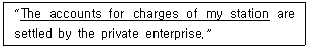
- 당국의 교신량
- 당국의 요금계산
- 본선의 물하량
- 본선의 하역계산
(정답률: 알수없음)
31. 다음 문장의 밑줄친 부분과 전혀 관계가 없는 것은?
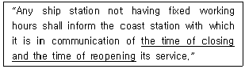
- 개폐국 시간
- 장단점 소요시간
- 소통업무시간
- 선박국 교신시간
(정답률: 알수없음)
32. 각 문장 중 밑줄친 부분의 뜻이 다른 세문장과 같지 않은 것은?
- a storm, we could not depart from the port.
- It is unable to continue working atmospheric condition.
- The station is emitting the frequency 500 KHz the silence period.
- engine trouble, we cannot proceed.
(정답률: 알수없음)
33. 다음 약어 중 "선하 증권"을 뜻하는 것은?
- L/C
- L/A
- B/L
- C/O
(정답률: 알수없음)
34. 다음 영문의 ( ) 안에 가장 적당한 것은?
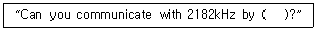
- radiotelephoney
- radiotelegraphy
- emergency signal
- urgency telegram
(정답률: 알수없음)
35. 다음 문장에 대한 가장 적합한 영역은?
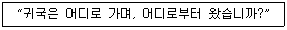
- What is the name of your vessel?
- How far approximately are you from my station?
- Where are you bound for and where are you from?
- Does my frequency vary?
(정답률: 알수없음)
36. 다음 무선전화 절차용어의 설명 중 틀린 것은?
- Roger : 당신의 송신을 수신했고 이해 했다.
- Stand by : 잠시 기다리시오.
- Wait out : 끝내시오.
- Go ahead : 보내 주시오.
(정답률: 알수없음)
37. 알파벳 통화표의 발음에 대한 강세를 실선으로 표시 하였다. 이중 표기가 틀린 것은?
- F : TROT
- E : OH
- L : MAH
- T : IM
(정답률: 알수없음)
38. 다음 질문에 대한 회신으로 가장 적절한 것은?
- Decrease transmitter power.
- Increase transmitter power.
- The tone of your transmission is good.
- Distress traffic still in force, restricted working may be resumed.
(정답률: 알수없음)
39. 다음 문장의 ( )에 가장 적합한 것은?
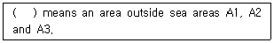
- Sea area A4
- Sea area A5
- Sea area A6
- Sea area A7
(정답률: 알수없음)
40. 국제전기통신연합의 가장 기본이 되는 법률문서는?
- Constitution
- Convention
- Administrative Regulation
- Radio Regulation
(정답률: 알수없음)
3과목: 임의 구분
41. 무선국의 고시사항이 아닌 것은?
- 허가 연월일과 허가번호
- 변조 방식
- 시설자 성명
- 호출부호 또는 호출명칭
(정답률: 알수없음)
42. 무선 설비에 안전 시설을 강요하는 이유로 가장 타당한 것은?
- 전파 질서의 확보를 위하여
- 전파의 질을 향상하기 위하여
- 무선설비의 수명연장을 위하여
- 인체의 위해와 물건의 손상을 예방하기 위하여
(정답률: 알수없음)
43. 무선국 허가 신청의 심사기준이 아닌 것은?
- 주파수지정이 가능 할 것
- 무선국 개설조건에 적합 할 것
- 무선종사자의 배치계획이 적합 할 것
- 장비 개선에 필요한 재정적 여유가 있을 것
(정답률: 알수없음)
44. 다음 통신 방식중 가장 보안도가 낮은 통신은?
- 일반 유선통신
- 일반 통상 우편
- 무선중계 유선통신
- 시호 통신
(정답률: 알수없음)
45. 중요 통신 내용이 통신에 의하여 누설될 수 있는 가장 큰 원인은 무엇인가?
- 통신 이용자가 많기 때문이다.
- 통신 확인법을 사용하지 않기 때문이다.
- 중요 내용을 평문으로 송신하기 때문이다.
- 중요 내용에만 음어나 약호를 사용하기 때문이다.
(정답률: 알수없음)
46. 국제전기통신연합의 최고 기관에 해당하는 것은?
- 주관청 회의
- 관리이사회
- 사무총국
- 전권위원회
(정답률: 알수없음)
47. 비밀 누설의 주요 요인이 아닌 것은?
- 취약성 있는 통신망 이용
- 보고 체제의 다원화
- 과다한 통신 소통
- 보안 장비 이용
(정답률: 알수없음)
48. 음향통신의 장점에 해당 되는 것은?
- 기상에 따른 영향을 받지 않는다.
- 제3자의 방해가 없다.
- 주위에 신속히 의사를 전달할 수 있다.
- 원거리 통신이 가능하다.
(정답률: 알수없음)
49. GMDSS의 주요기능에 포함되지 않는 것은?
- 육상대 선박의 조난경보의 수신
- 현장통신의 송신 및 수신
- 무선방향탐지기에 의한 송신 및 수신
- 해상안전정보의 송신 및 수신
(정답률: 알수없음)
50. 국제전기통신업무를 취급하는 제3종국의 선박국은 그 선박의 항행중 몇시간동안 운용하여야 하는가?
- 상시
- 1일 16시간
- 1일 8시간
- 1일 4시간
(정답률: 알수없음)
51. 무선설비의 운용을 위한 전원은 전압변동율이 정격전압의 몇 퍼센트 이내로 유지할 수 있어야 하는가?
- ± 5 퍼센트
- ± 10 퍼센트
- ± 15 퍼센트
- ± 20 퍼센트
(정답률: 알수없음)
52. 다음의 경우에는 시설자는 정보통신부장관에게 신고해야 한다. 관계 없는 것은?
- 무선국의 폐지
- 15일간의 무선국의 운용휴지
- 1개월간의 무선국의 운용휴지
- 2개월간의 무선국의 운용휴지
(정답률: 알수없음)
53. 다음의 직접인쇄전신(NBDP)에 의한 조난호출 구성 중 옳은 것은?
- MAYDAY 3회/ DE 1회/ 조난선박국의 호출부호 3회
- MAYDAY 2회/ DE 1회/ 조난선박국의 호출부호 2회
- MAYDAY 2회/ DE 2회/ 조난선박국의 호출부호 2회
- MAYDAY 3회/ DE 3회/ 조난선박국의 호출부호 3회
(정답률: 알수없음)
54. 무선국 개설허가의 유효기간에 관한 설명중 맞는 것은?
- 이동국, 육상국 및 항공국의 개설허가의 유효기간은 5년이다.
- 기지국, 선상통신국 및 간이 무선국의 개설허가의 유효기간은 4년이다.
- 실험국 및 실용화시험국의 개설허가의 유효기간은 3년이다.
- 해안지구국 및 이동지구국의 개설허가의 유효기간은 2년이다.
(정답률: 알수없음)
55. 해상이동 업무에 있어서 통신의 우선순위를 나열한 것 중 맞는 것은?
- 조난 - 긴급 - 안전 - 비상
- 조난 - 긴급 - 비상 - 안전
- 긴급 - 조난 - 안전 - 비상
- 긴급 - 조난 - 비상 - 안전
(정답률: 알수없음)
56. NAVTEX 시스템에 사용되는 주파수는?
- 500㎑
- 518㎑
- 2,182㎑
- 156.8㎒
(정답률: 알수없음)
57. 협대역 직접인쇄전신에 의한 조난신호는?
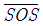
- MAYDAY
- PANPAN
- SECURITE
(정답률: 알수없음)
58. 무선통신업무에 종사하는 자의 통신보안교육은 몇 년마다 받아야 하는가?
- 2년마다 1회
- 3년마다 1회
- 5년마다 1회
- 10년마다 1회
(정답률: 알수없음)
59. 세계전파통신부문에 해당되지 아니한 것은?
- 지역 전파통신회의
- 전파관리위원회
- 전파통신자문반
- 전파조정위원회
(정답률: 알수없음)
60. 통신보안 준수 사항이 아닌 것은?
- 무선국 허가 사항 준수
- 발신 전문의 사전 보안성 검토
- 비밀(대외비 포함) 내용의 통신 시 보안자재 사용
- 필요시 비인가 보안자재 사용
(정답률: 알수없음)